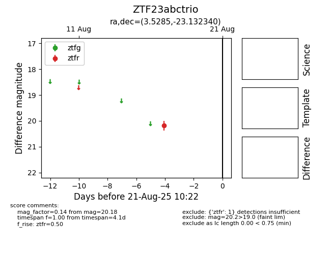

Target ZTF23abctrio at 2025-08-21 10:22, see:
FINK: fink-portal.org/ZTF23abctrio
Lasair: lasair-ztf.lsst.ac.uk/objects/ZTF23abctrio
ALeRCE: alerce.online/object/ZTF23abctrio
alt names
ZTF23abctrio (ztf,alerce)
coordinates:
equatorial (ra, dec) = (3.5285,-23.13234)
galactic (l, b) = (56.2072,-80.65897)
photometry
last ztfr=20.18
1 ztfr detections
